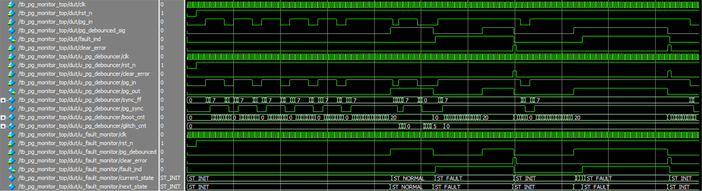

In space-bound and high-reliability applications, power supply monitoring requires logic that is both exceptionally tolerant to transient noise and instantaneously reactive to genuine failures. Monitoring the Power Good / Overcurrent (PG/OC) signal of a space-grade Low-Dropout (LDO) regulator presents a unique set of challenges that cannot be solved with standard debouncing techniques.
This article outlines a robust, radiation-hardened FPGA architecture designed to monitor the LDO, focusing on dual-threshold asymmetric debouncing and geometrically encoded, self-correcting finite state machine design.
The LDO utilizes an open-drain PG/OC flag. While simple in principle, its behavior across different operating phases demands a highly specialized digital filter.
During power-up, the LDO's output voltage ramps up according to the soft-start capacitor. For a typical configuration, the soft-start time is in the order of 10's of ms. As the voltage slowly crosses the digital logic threshold, the open-drain architecture combined with minute analog noise inevitably causes severe chattering on the PG/OC line. Standard synchronous sampling will misinterpret this chatter as a series of rapid fault-and-recovery events.
During normal operation, the environment introduces a different threat. High-energy ion strikes can induce Single Event Transients (SETs) on the PCB traces or inside the LDO itself, manifesting as nanosecond-scale glitches. Additionally, harsh load-step ringing can momentarily dip the voltage. If the monitoring logic treats every falling edge as an instant failure, the system will suffer from continuous false-positive fault latching.
To resolve the conflicting requirements of masking prolonged start-up chatter while remaining highly sensitive to actual brownouts, the RTL must implement a dual-threshold asymmetric filter.
Instead of a single counter, the architecture utilizes two independent filtering mechanisms:
pg_out is asserted high. Any drop during this phase instantly resets the boot progress.This strategy ensures that the system ignores radiation-induced transients but reacts to a catastrophic overcurrent event thousands of times faster than it takes to boot.
Once the signal is safely debounced, it must be evaluated by a fault monitoring Finite State Machine (FSM). In an irradiated environment, Single Event Upsets (SEUs) can flip register bits, causing standard binary or one-hot state machines to enter undefined states or silently drop fault flags.
To harden the FSM, states are encoded utilizing a minimum Hamming distance of 4. For a standard three-state architecture, the encodings are distributed geometrically across an 8-bit vector:
ST_INIT = 8'b0000_0000
8'b0000_0001,
8'b0000_0010,
8'b0000_0100,
8'b0000_1000,
8'b0001_0000,
8'b0010_0000,
8'b0100_0000,
8'b1000_0000
ST_NORMAL = 8'b0000_1111
8'b0000_1110,
8'b0000_1101,
8'b0000_1011,
8'b0000_0111,
8'b0001_1111,
8'b0010_1111,
8'b0100_1111,
8'b1000_1111
ST_FAULT = 8'b0011_0011
8'b0011_0010,
8'b0011_0001,
8'b0011_0111,
8'b0011_1011,
8'b0010_0011,
8'b0001_0011,
8'b0111_0011,
8'b1011_0011
This spacing guarantees that a single or double bit-flip cannot accidentally transition the machine from a faulted state back into a normal operating state.
With only three valid states in an 8-bit register, there are 253 invalid vectors. Rather than relying on algorithmic error correction, which consumes significant combinatorial logic and timing budget, the FSM utilizes companion state absorption. The default case of the state machine strictly routes all undefined vectors directly to ST_FAULT. If a particle strike scrambles the state register, the system traps itself in a safe, fail-secure condition.
When a fault is detected, the FSM transitions to ST_FAULT and asserts a fault_ind flag. It remains latched in this state indefinitely. To recover, a system controller must assert a synchronous clear_fault command.
Crucially, the FSM does not transition directly from ST_FAULT back to ST_NORMAL. Instead, clear_fault routes the machine back to ST_INIT and forces a completely new boot verification window
regardless of the physical line state. This architectural choice forces the FSM to re-verify the raw PG/OC signal against the full $5\text{ms}$ boot debounce threshold, preventing a hazardous "chatter loop" if the physical LDO is still recovering.
The following code provides the complete, synthesizable Register-Transfer Level (RTL) architecture for the top-level wrapper, the dual-threshold debouncer, and the companion-state FSM.
`timescale 1ns / 1ps
// ==============================================================================
// Module: pg_monitor_top
// Description: Top-level integration of the dual-threshold debouncer and the
// fault monitoring state machine.
// ==============================================================================
module pg_monitor_top #(
parameter int BOOT_DEBOUNCE_CYCLES = 250000, // 5ms at 50MHz
parameter int GLITCH_FILTER_CYCLES = 50 // 1us at 50MHz
) (
input logic clk,
input logic rst_n,
input logic pg_in, // Raw, asynchronous PG_OC signal from LDO
input logic clear_error, // Synchronous command to clear a latched fault
output logic fault_ind // Latched fault indicator
);
logic pg_debounced_sig;
// Instantiate the Dual-Threshold Debouncer
pg_debouncer #(
.BOOT_DEBOUNCE_CYCLES(BOOT_DEBOUNCE_CYCLES),
.GLITCH_FILTER_CYCLES(GLITCH_FILTER_CYCLES)
) u_pg_debouncer (
.clk (clk),
.rst_n (rst_n),
.clear_error (clear_error), // Routed to force re-verification
.pg_in (pg_in),
.pg_out (pg_debounced_sig)
);
// Instantiate the Fault Monitor FSM
pg_oc_fault_monitor u_fault_monitor (
.clk (clk),
.rst_n (rst_n),
.pg_debounced (pg_debounced_sig),
.clear_error (clear_error),
.fault_ind (fault_ind)
);
endmodule
// ==============================================================================
// Module: pg_debouncer
// Description: Dual-threshold debounce filter with 3-stage synchronization.
// Flushes state entirely upon clear_error to prevent chatter loops.
// ==============================================================================
module pg_debouncer #(
parameter int BOOT_DEBOUNCE_CYCLES = 250000,
parameter int GLITCH_FILTER_CYCLES = 50
) (
input logic clk,
input logic rst_n,
input logic clear_error,
input logic pg_in,
output logic pg_out
);
// 3-Stage Synchronizer for Metastability Mitigation
logic [2:0] sync_ff;
always_ff @(posedge clk or negedge rst_n) begin
if (!rst_n) begin
sync_ff <= 3'b000;
end else begin
sync_ff <= {sync_ff[1:0], pg_in};
end
end
logic pg_sync;
assign pg_sync = sync_ff[2];
// Counter Sizing
localparam int BOOT_WIDTH = $clog2(BOOT_DEBOUNCE_CYCLES + 1);
localparam int GLITCH_WIDTH = $clog2(GLITCH_FILTER_CYCLES + 1);
logic [BOOT_WIDTH-1:0] boot_cnt;
logic [GLITCH_WIDTH-1:0] glitch_cnt;
// Dual-Threshold State Logic
always_ff @(posedge clk or negedge rst_n) begin
if (!rst_n) begin
boot_cnt <= '0;
glitch_cnt <= '0;
pg_out <= 1'b0;
end else if (clear_error == 1'b1) begin
// Synchronous flush: Forces a completely new boot verification window
// regardless of the physical line state, preventing chatter loops.
boot_cnt <= '0;
glitch_cnt <= '0;
pg_out <= 1'b0;
end else begin
if (pg_sync == 1'b1) begin
// The line is HIGH (or has successfully recovered from a glitch)
glitch_cnt <= '0; // Clear glitch history immediately
if (pg_out == 1'b0) begin
if (boot_cnt < BOOT_DEBOUNCE_CYCLES) begin
boot_cnt <= boot_cnt + 1'b1;
end else begin
pg_out <= 1'b1; // Boot debounce satisfied, assert Power Good
end
end
// If pg_out is already 1'b1, it implicitly holds its state.
// Intentionally bypass boot_cnt to prevent false drops on recovery.
end else begin
// The line has dropped LOW
if (pg_out == 1'b1) begin
// In NORMAL operation. Apply the glitch filter.
if (glitch_cnt < GLITCH_FILTER_CYCLES) begin
glitch_cnt <= glitch_cnt + 1'b1;
// pg_out implicitly remains 1'b1 to mask the glitch
end else begin
// Glitch duration exceeded threshold. It is a genuine fault.
pg_out <= 1'b0;
boot_cnt <= '0; // Reset boot counter ONLY when a true fault is declared
end
end else begin
// In the boot phase (or already faulted).
// Any drop here instantly kills the boot progress.
boot_cnt <= '0;
pg_out <= 1'b0;
end
end
end
end
endmodule
// ==============================================================================
// Module: pg_oc_fault_monitor
// Description: Fault detection FSM with geometric companion states (HD=4).
// Single-bit upsets are absorbed and self-healed.
// Multi-bit upsets fall through to the fail-safe ST_FAULT.
// ==============================================================================
module pg_oc_fault_monitor (
input logic clk,
input logic rst_n,
input logic pg_debounced,
input logic clear_error,
output logic fault_ind
);
typedef enum logic [7:0] {
ST_INIT = 8'b0000_0000,
ST_NORMAL = 8'b0000_1111,
ST_FAULT = 8'b0011_0011
} state_t;
state_t current_state, next_state;
always_ff @(posedge clk or negedge rst_n) begin
if (!rst_n) begin
current_state <= ST_INIT;
end else begin
current_state <= next_state;
end
end
always_comb begin
// Default fallback to safe state for multi-bit (unmapped) upsets
next_state = ST_FAULT;
case (current_state)
// ---------------------------------------------------------
// Base State: ST_INIT + 1-Bit Companions
// ---------------------------------------------------------
ST_INIT,
8'b0000_0001, 8'b0000_0010, 8'b0000_0100, 8'b0000_1000,
8'b0001_0000, 8'b0010_0000, 8'b0100_0000, 8'b1000_0000: begin
if (pg_debounced == 1'b1) begin
next_state = ST_NORMAL;
end else begin
next_state = ST_INIT; // Heals transient bit-flip
end
end
// ---------------------------------------------------------
// Base State: ST_NORMAL + 1-Bit Companions
// ---------------------------------------------------------
ST_NORMAL,
8'b0000_1110, 8'b0000_1101, 8'b0000_1011, 8'b0000_0111,
8'b0001_1111, 8'b0010_1111, 8'b0100_1111, 8'b1000_1111: begin
if (pg_debounced == 1'b0) begin
next_state = ST_FAULT;
end else begin
next_state = ST_NORMAL; // Heals transient bit-flip
end
end
// ---------------------------------------------------------
// Base State: ST_FAULT + 1-Bit Companions
// ---------------------------------------------------------
ST_FAULT,
8'b0011_0010, 8'b0011_0001, 8'b0011_0111, 8'b0011_1011,
8'b0010_0011, 8'b0001_0011, 8'b0111_0011, 8'b1011_0011: begin
if (clear_error == 1'b1) begin
next_state = ST_INIT;
end else begin
next_state = ST_FAULT; // Heals transient bit-flip
end
end
default: begin
next_state = ST_FAULT;
end
endcase
end
always_comb begin
// Default output to safe condition
fault_ind = 1'b1;
case (current_state)
ST_INIT,
8'b0000_0001, 8'b0000_0010, 8'b0000_0100, 8'b0000_1000,
8'b0001_0000, 8'b0010_0000, 8'b0100_0000, 8'b1000_0000: begin
fault_ind = 1'b0;
end
ST_NORMAL,
8'b0000_1110, 8'b0000_1101, 8'b0000_1011, 8'b0000_0111,
8'b0001_1111, 8'b0010_1111, 8'b0100_1111, 8'b1000_1111: begin
fault_ind = 1'b0;
end
ST_FAULT,
8'b0011_0010, 8'b0011_0001, 8'b0011_0111, 8'b0011_1011,
8'b0010_0011, 8'b0001_0011, 8'b0111_0011, 8'b1011_0011: begin
fault_ind = 1'b1;
end
default: begin
fault_ind = 1'b1;
end
endcase
end
endmodule
Validating this architecture requires a self-checking testbench tailored for highly asymmetric timing. Because simulating millions of clock cycles for a $5\text{ms}$ timer is computationally expensive, the parameters are overridden during simulation to highly compressed values (e.g., a 20-cycle boot timer and a 5-cycle glitch timer).
The testbench below systematically injects start-up chatter, sub-threshold SET glitches, and true catastrophic faults, automatically asserting pass/fail metrics at each stage.
`timescale 1ns / 1ps
module tb_pg_monitor_top;
// -------------------------------------------------------------------------
// Parameters & Signals
// -------------------------------------------------------------------------
localparam int SIM_BOOT_CYCLES = 20;
localparam int SIM_GLITCH_CYCLES = 5;
localparam time CLK_PERIOD = 20ns; // 50 MHz Clock
logic clk;
logic rst_n;
logic pg_in;
logic clear_error;
logic fault_ind;
int error_count = 0;
// -------------------------------------------------------------------------
// DUT Instantiation
// -------------------------------------------------------------------------
pg_monitor_top #(
.BOOT_DEBOUNCE_CYCLES(SIM_BOOT_CYCLES),
.GLITCH_FILTER_CYCLES(SIM_GLITCH_CYCLES)
) dut (
.clk (clk),
.rst_n (rst_n),
.pg_in (pg_in),
.clear_error(clear_error),
.fault_ind (fault_ind)
);
// -------------------------------------------------------------------------
// Clock Generation
// -------------------------------------------------------------------------
initial begin
clk = 1'b0;
forever #(CLK_PERIOD / 2.0) clk = ~clk;
end
// -------------------------------------------------------------------------
// Self-Checking Task
// -------------------------------------------------------------------------
task check_assert(input logic expected, input string test_name);
if (fault_ind !== expected) begin
$error("[FAIL] %s | Expected: %b, Actual: %b", test_name, expected, fault_ind);
error_count++;
end else begin
$display("[PASS] %s", test_name);
end
endtask
// -------------------------------------------------------------------------
// Main Stimulus Sequence
// -------------------------------------------------------------------------
initial begin
$display("=========================================================");
$display("Starting Self-Checking Testbench for PG Monitor");
$display("=========================================================");
// 1. Initialize & Reset
rst_n = 1'b0;
pg_in = 1'b0;
clear_error = 1'b0;
#(CLK_PERIOD * 5);
rst_n = 1'b1;
#(CLK_PERIOD * 5);
check_assert(1'b0, "Initialization: fault_ind should be 0 out of reset");
// 2. Simulate Soft-Start Chatter
$display("--- Simulating Soft-Start Chatter ---");
repeat (5) begin
pg_in = 1'b1;
#(CLK_PERIOD * (SIM_BOOT_CYCLES / 2));
pg_in = 1'b0;
#(CLK_PERIOD * 5);
end
check_assert(1'b0, "Chatter Masking: FSM should remain in ST_INIT");
// 3. Simulate Successful Soft-Start Completion
$display("--- Simulating Successful Power-Up ---");
pg_in = 1'b1;
#(CLK_PERIOD * (3 + SIM_BOOT_CYCLES + 2));
check_assert(1'b0, "Successful Boot: FSM is in ST_NORMAL");
// 4. Simulate SET Glitch Rejection
$display("--- Simulating Short SET Glitch ---");
pg_in = 1'b0;
#(CLK_PERIOD * (SIM_GLITCH_CYCLES - 2));
pg_in = 1'b1;
#(CLK_PERIOD * 10);
check_assert(1'b0, "SET Rejection: Short glitch was safely ignored");
// 5. Simulate Genuine Fault Event
$display("--- Simulating Brownout/Fault Event ---");
pg_in = 1'b0;
#(CLK_PERIOD * (5 + SIM_GLITCH_CYCLES + 1));
check_assert(1'b1, "Fault Latency: fault_ind asserted successfully");
// 6. Verify Fault Latching Behavior
$display("--- Verifying Latch Integrity ---");
pg_in = 1'b1;
#(CLK_PERIOD * (SIM_BOOT_CYCLES * 2));
check_assert(1'b1, "Fault Latching: fault_ind remained latched");
// 7. Simulate clear_error
$display("--- Verifying clear_error Command ---");
clear_error = 1'b1;
#(CLK_PERIOD * 2);
clear_error = 1'b0;
#(CLK_PERIOD * 2);
check_assert(1'b0, "Error Cleared: fault_ind deasserted");
// 8. Re-Arming Safety Check
$display("--- Verifying Re-Arm Safety Post-Clear ---");
pg_in = 1'b0;
#(CLK_PERIOD * 5);
check_assert(1'b0, "Re-Arm Safety: FSM remains in ST_INIT waiting for stable PG");
// 9. Simulate SEU - 1-Bit Flip (Companion State Absorption)
$display("--- Simulating SEU 1-Bit Flip (Companion State Absorption) ---");
pg_in = 1'b1;
#(CLK_PERIOD * (3 + SIM_BOOT_CYCLES + 2));
check_assert(1'b0, "SEU Prep: FSM returned to ST_NORMAL");
@(negedge clk);
// Force a 1-bit flip in ST_NORMAL (0000_1111 -> 0000_1110)
force dut.u_fault_monitor.current_state = 8'b0000_1110;
@(negedge clk);
release dut.u_fault_monitor.current_state;
// Output should seamlessly remain 0 due to companion state mapping
check_assert(1'b0, "SEU Absorption: 1-bit flip safely ignored, fault_ind = 0");
// Wait one clock to ensure the FSM healed back to pure ST_NORMAL (0000_1111)
@(posedge clk);
#(CLK_PERIOD);
check_assert(1'b0, "SEU Self-Heal: System maintained normal operation");
// 10. Simulate SEU - Multi-Bit Flip (Default Fallback)
$display("--- Simulating SEU Multi-Bit Flip (Default Fallback) ---");
@(negedge clk);
// Force an unmapped, multi-bit error vector (e.g., 8'hA5)
force dut.u_fault_monitor.current_state = 8'hA5;
@(negedge clk);
release dut.u_fault_monitor.current_state;
@(posedge clk);
#(CLK_PERIOD);
check_assert(1'b1, "Multi-Bit SEU: Invalid state forced FSM into ST_FAULT");
// 11. Verify Chatter Loop Prevention (clear_error debouncer flush)
$display("--- Verifying Chatter Loop Prevention ---");
pg_in = 1'b1;
#(CLK_PERIOD * (3 + SIM_BOOT_CYCLES * 2));
// Physical line is fully stable, but FSM is in ST_FAULT from step 10.
clear_error = 1'b1;
#(CLK_PERIOD * 2);
clear_error = 1'b0;
#(CLK_PERIOD * (SIM_BOOT_CYCLES / 2));
// Inject chatter before the boot timer expires
pg_in = 1'b0;
#(CLK_PERIOD * 5);
check_assert(1'b0, "Chatter Loop Prevented: FSM safely flushed and waited in ST_INIT");
// =========================================================================
$display("=========================================================");
if (error_count == 0) begin
$display("TEST RESULT: ALL CHECKS PASSED. SYSTEM IS ROBUST.");
end else begin
$display("TEST RESULT: FAILED WITH %0d ERRORS.", error_count);
end
$display("=========================================================");
$finish;
end
endmodule
# =========================================================
# Starting Self-Checking Testbench for PG Monitor
# =========================================================
# [PASS] Initialization: fault_ind should be 0 out of reset
# --- Simulating Soft-Start Chatter ---
# [PASS] Chatter Masking: FSM should remain in ST_INIT
# --- Simulating Successful Power-Up ---
# [PASS] Successful Boot: FSM is in ST_NORMAL
# --- Simulating Short SET Glitch ---
# [PASS] SET Rejection: Short glitch was safely ignored
# --- Simulating Brownout/Fault Event ---
# [PASS] Fault Latency: fault_ind asserted successfully
# --- Verifying Latch Integrity ---
# [PASS] Fault Latching: fault_ind remained latched
# --- Verifying clear_error Command ---
# [PASS] Error Cleared: fault_ind deasserted
# --- Verifying Re-Arm Safety Post-Clear ---
# [PASS] Re-Arm Safety: FSM remains in ST_INIT waiting for stable PG
# --- Simulating SEU 1-Bit Flip (Companion State Absorption) ---
# [PASS] SEU Prep: FSM returned to ST_NORMAL
# [PASS] SEU Absorption: 1-bit flip safely ignored, fault_ind = 0
# [PASS] SEU Self-Heal: System maintained normal operation
# --- Simulating SEU Multi-Bit Flip (Default Fallback) ---
# [PASS] Multi-Bit SEU: Invalid state forced FSM into ST_FAULT
# --- Verifying Chatter Loop Prevention ---
# [PASS] Chatter Loop Prevented: FSM safely flushed and waited in ST_INIT
# =========================================================
# TEST RESULT: ALL CHECKS PASSED. SYSTEM IS ROBUST.
# =========================================================
# ** Note: $finish : ../src/tb_pg_monitor_top.sv(794)
# Time: 5470 ns Iteration: 0 Instance: /tb_pg_monitor_top

Standard digital inputs are entirely insufficient for monitoring space-grade analog power devices. By combining a dual-threshold asymmetric debouncer with a geometrically encoded, self-correcting finite state machine, engineers can guarantee that an FPGA will successfully ignore millisecond-scale startup chatter and nanosecond-scale radiation transients, while reliably latching genuine hardware failures.